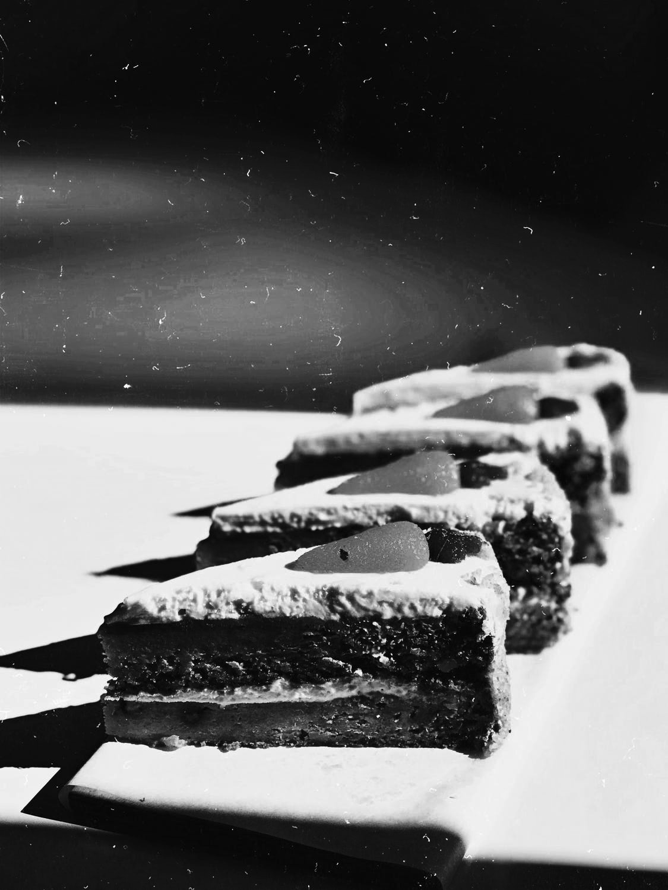

AMERICAN
RESTAURANT
IN THE HEART OF
WEST
HOLLYWOOD.
Housed in a charming Carr Jones designed historic building, Postino welcomes guests with the celebration of food, family, friends and life around the dinner table featuring our Italian influenced, California cuisine.
READ MOREA
S
T
Y
LOCATED IN
MIDTOWN
MANHATTAN.
Butter Restaurant has maintained an exclusive niche restaurant scene for stylish Manhattanites since its initial inception on Lafayette St. in 2002. The American restaurant is helmed by Food Network star and Executive Chef Alex Guarnaschelli, who uses greenmarket offerings to create a seasonal menu.
Butter began as Guarnaschellis' first restaurant as executive chef, and she has gone on to create a following for herself worldwide. The dining room at Butter offers a unique atmosphere and decor. Between high arching ceilings- caped with a large format nature scape, cozy booths- perfect for a romantic night out, and an inviting bar, Butter caters to any guest, whether they are seeking either a formal dining experience or one that is more casual.
READ MORE
DURING
RESTAURANT
HOURS
WE OFFER
OUR ENTIRE MENU
FOR
DELIVERY.
JOHNNY COCHRAN
— HEAD CHEF —
Our head chef James Cochran is a chef like no other, heralding his mix heritage through his food, from the Caribbean to Scotland and his birth town Whitstable.
James grew up working at the famous Wheelers Oyster Bar, and has since worked at The Ledbury and Harwood Arms, as well as the controversial restaurant named after himself James Cochran EC3. James has since won the BBC2 food programme Great British Menu last year, and opened the doors to 12:51 in late August of last year.
READ MORE
DELIVERY IS FREE
TO MOST
NEIGHBORHOODS
IN SAN
FRANCISCO. ORDERS MUST BE
A
MINIMUM OF $34
PLUS TAX
AND TIP.

Tasty
70 W 45th St
New York, NY 10036
Phone: 555-666-2222
O
N
T
A
C
T